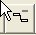
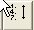
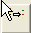

Ecoplanning 5.0
7 Villa des Hortensias
92350 Le Plessis Robinson
Sommaire
1Commandes et menus du logiciel Ecoplanning 5.0
2 Création modification d'un Projet
3 Les traitements avec les tâches cochées
4 Affectation de Critères aux tâches
5 Traitements
6 Impressions Plannings
7 Impressions Rapports
1 Commandes et menus du logiciel Ecoplanning 5.0
1.00 Installation Ecoplanning 5.0
1.01 Les menus
1.02 Les menus locaux (menus de la souris)
1.03 Barre d'outil
1.04 Les Onglets (espace de travail écran)
1.05 Boite de dialogue1.06 Les tâches
1.07 Les champs des tâches
1.08 Aide
1.09 Lancer Ecoplanning 5.0
1.10 Enregistrer un document
1.11 Enregistrer un document sous
1.12 Créer un nouveau projet
1.13 Ouvrir un projet existant
1.00 Installation Ecoplanning 5.0
Installation Ecoplanning
Pour installer Ecoplanning 5.0, insérer le CD-ROM dans le micro-ordinateur
Chargez le CD avec Explorateur de Windows
A la fin de l'installation d'Ecoplanning 5.0, le groupe de programmes Ecoplanning 5.0 contenant l'icône Ecoplanning apparaît sur votre écran
Vous devrez utiliser la clé USB noir livrée avec le logiciel. Cliquez deux fois sur cette icône pour lancer le logiciel.
Il faut demander si l'utilisateur désire mettre icône dans le tableau de windows
(Consulter la procédure d'installation d'Ecoplanning 5.0).
Menus
1.01 Les menus d' Ecoplanning 5.0
Menu Fichier
Contient les commandes qui permettent d'accéder de créer à un document Ecoplanning (comme Nouveau,
Ouvrir, Fermer, Quitter, Enregistrer, Imprimer, Import / Export).de visualiser les dix derniers fichiers ouverts
Menu Projet
On peut consulter les éléments du projet et effectuer des modifications
Résumé du projet Date début du projet Calendrier,, Critères,
Menu Cocher
Après avoir cocher les tâches concernées on peut appliquer sur celles-ci différents des traitements, relatifs à ces éléments pour obtenir des actions :tels que : Lier les tâches - Copier les tâches
Vous aurez, également, accès à ces commandes en utilisant le menu contextuel des colonnes de l'onglet" Saisie prévisionnelle "
Menu Filtrer
Contient les commandes qui permettent :
- "de choisir un filtre mémorisé et de l'utiliser" - "de compléter et créer de nouveaux filtres"
Permet également de faire
"apparaître toutes les tâches" - "aucune tâche du projet à l'écran".
Menu Outils
Contient les commandes de traitements (autres qu'avec coché) : Critères -Calendriers - Trier grouper Tâches -Numéroter tâches - Préparation Rapports- Préparation Planning - Simulation.
Menu Fenêtres
Ce menu vous permet de consulter les fichiers des projets ouverts des traitements de passer du projet ouvert (celui qui est coché) à à un des autres.
Menu Aide
Ce menu permet d'accéder au sommaire de l'aide ainsi qu'à des informations sur l'utilisation de l'aide et sur Ecoplanning
Menus Locaux
1.02 Les menus locaux (menus de la souris)
Ce sont les menus restreints qui affichent les options applicables à l'élément sélectionné ou pointé.
Pour afficher un menu local, sélectionner ou pointer l'élément concerné puis Cliquer-Droit sur celui-ci.
Barre Outil
1.03 Barre d'outils : de la version 5.0
Ouvrir un nouveau projet.
Ouvrir un projet existant
Enregistrer le projet.
Cocher tâches /champ on peut cocher les tâches à partir du choix d'un champ
Décocher tous les éléments dans le volet actif
 Lier les tâches cochées dans le volet actif.
Lier les tâches cochées dans le volet actif.

Délier les tâches cochées dans le volet actif
Affecter données aux tâches ou ressources cochées dans le volet actif.

Trier les tâches. Grouper les tâches par données et critères

Filtrer les tâches
Numéroter tâches
Le bouton vous permet d'afficher le sommaire de l'aide
Onglets
1.04. Les Onglets (espace de travail écran)
L'utilisation du logiciel Ecoplanning 5.0 s'articule autour des 10 onglets qui sont accessible en permanence en haut de l'écran,
Il s'agit de cliquer dessus pour les rendre actif et pour avoir accès aux possibilités qu'ils offrent.
Pour passer d'un onglet à l'écran à une autre ? cliquez sur l'onglet concerné.
Onglet Saisie prévisionnelle
Onglet Gantt prévisionnel
Onglet Affectation critères
Onglet Elaboration Rapport- Rapport 2
Onglet Planning en cours - Planning 2 - Planning 3
Dans ces onglets ont peut
- accéder à des rapports et plannings mémorisés pour, pour de nouvelles utilisations, de
besoins spécifiques.
- les modifie ces derniers puis de les mémoriser ceux-ci pour de nouvelle utilisation ils
s'afficheront à la demande des utilisateurs dans des onglets
Ceux-ci sont mémorisés et
accessibles dans les boites de dialogues :
Préparation Rapport - Préparation Planning.
Onglet Coûts échéanciers
Onglet Renumérotation
Boites de Dialogue
1.05 Boîte de dialogue
Les boîtes de dialogue contiennent un bouton d'aide qui vous permet d'afficher la rubrique d'aide sur cette boîte de dialogue.
Taches
1.06 Les tâches
Dans le logiciel Ecoplanning on utilise trois types de tâches
- les tâches d'exécution du projet.
C'est à partir d'elles qu'est effectué l'ordonnancement du projet, et son suivi.
- les tâches enveloppe des critères et sous critères. Elles regroupent toutes leurs tâches de niveau hiérarchique inférieur.
- une ou des tâches amont qui sont seulement liés à une tâche du projet
Ces tâches amonts correspondent à des prestations des travaux à faire au préalable avant la réalisation de celle-ci.
Champs des Taches
1.07 Les champs des tâches
Pour une tâche on saisie la valeur de différentes champs.(en particulier : sa désignation, sa durée, ses données d'ordonnancement, ses coûts, ses code critères et sous critères).
En fonction des différents traitements que l'on choisi un certain nombre de champs non modifiable vont être créé par le logiciel : (en particulier :date de début au plus tôt prévisionnel - date de fin au plus tôt prévisionnelle, date de début au plus tard prévisionnel - date de fin au plus tard prévisionnelle, marge totale etc ils apparaissent ombrés)
Aide
1.08 Aide
Une aide sera rattachée aux différentes boîtes de dialogue
Vous pourrez revenir au sommaire de l'aide cliquez sur le bouton
Lancer Ecoplanning
1.09 Lancer Ecoplanning 5.0
Accéder à l'environnement Windows.
Faire un double clic sur l'icône d'Ecoplanning, ou dans " programme " charger Ecoplanning 5.0
Si besoin est, ouvrir le groupe de programmes qui contient l'icône d'Ecoplanning 5.0
Enregistrer Fichier Ecoplanning
1.10 Sauvegarder projet
Pour sauvegarder un projet :
Menu _Fichier ==> Enregistrer
ou cliquer sur le bouton
Enregistrer Sous ...
1.11 Sauvegarder un projet sous nom
Pour sauvegarder un projet sous nom :Menu _Fichier ==> Enregistrer sous
Dans la boîte de dialogue "Enregistrer sous" apparaît. Taper alors le nom du nouveau document, choisir le répertoire où il sera rangé, puis valider avec le bouton ou la touche .
Créer un nouveau Projet
1.12 Créer un nouveau projet
Pour créer un nouveau document, sélectionnerMenu _Fichier ==> Nouveau projet :
ou cliquer sur le bouton
Après avoir saisie les données préalables d'identification du nouveau fichier créé c'est l'onglet " Saisie Prévisionnelle " qui est actif et qui s'affiche à l'écran (voir paragraphe ---)
Ouvrir Projet Existant
1.13 Ouvrir un projet existant
Pour ouvrir un document déjà créé, sélectionner : Menu _Fichier ==> Ouvrir projet:
ou cliquer sur le bouton
Ou Cliquez l'un des 10 derniers fichiers des projets utilisés en bas du menu " Fichier "
Vous retrouverez à l'écran dans l'onglet " Saisie Prévisionnelle " " Saisie Prévisionnelle "